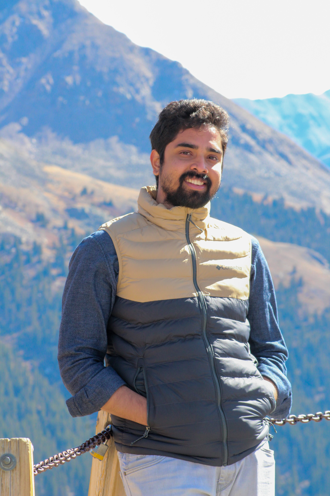
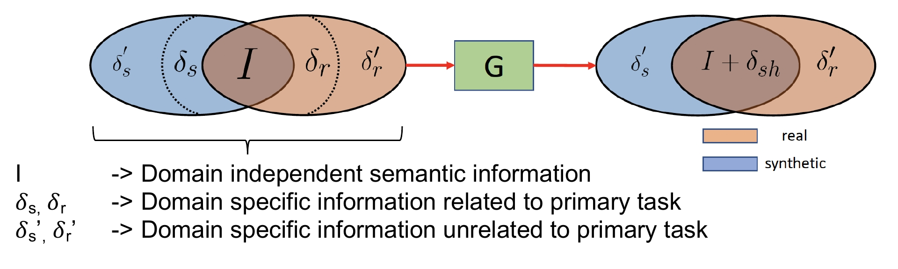
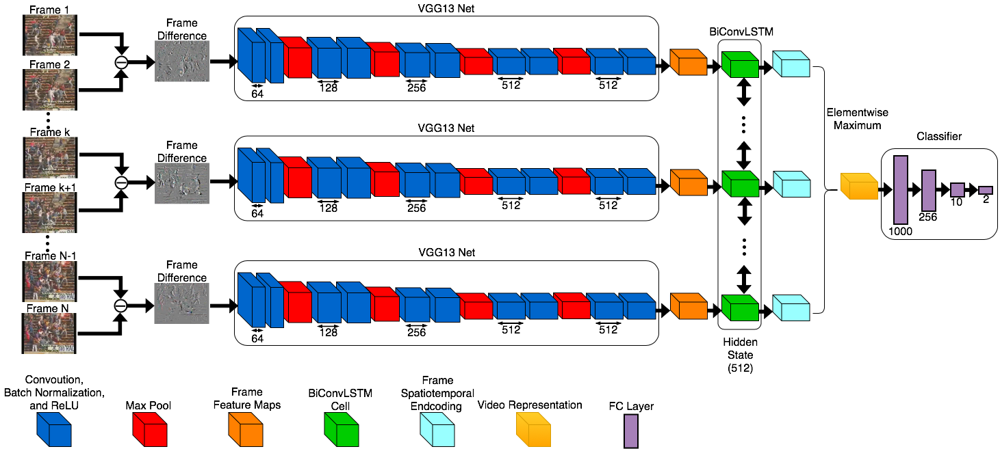

|  | I am a 4th year Ph.D. student in Electrical and Computer Engineering, advised by Prof. David Jacobs at University of Maryland, College Park. ContactEmail: koutilya at terpmail.umd.edu |
|  | SharinGAN: Combining Synthetic and Real Data for Unsupervised Geometry Estimation Koutilya PNVR, Hao Zhou, David Jacobs (CVPR 2020) [Paper][Project Page][Code] |
|  | Bidirectional convolutional lstm for the detection of violence in videos Alex Hanson*, Koutilya PNVR*, Sanjukta Krishnagopal, Larry Davis (ECCV 2018 Workshops) [Paper][Code] |
“A pseudo 2-D surface potential model of a dual material double gate junctionless field effect transistor”, Ashutosh Kumar Agrawal, PNVR Koutilya, M Jagadesh Kumar, Journal of Computational Electronics. [Paper]
“Satellite Based Cropland Carbon Monitoring System”, Varaprasad Bandaru, Curtis Dinneen Jones, Fernando Sedano, Ritvik Sahajpal, Huiran Jin, Sergii Skakun, Koutilya Pnvr, Anil Kommareddy, Ashwan Reddy, George C Hurtt, Roberto C Izaurralde, AGU Fall Meeting Abstracts. [Paper]
“Model-data integration for developing the Cropland Carbon Monitoring System (CCMS)”, Curtis Dinneen Jones, Varaprasad Bandaru, Koutilya Pnvr, Huiran Jin, Ashwan Reddy, Ritvik Sahajpal, Fernando Sedano, Sergii Skakun, Pradeep Wagle, Prasanna H Gowda, George C Hurtt, Roberto C Izaurralde, AGU Fall Meeting Abstracts. [Paper]
Teaching Assistant: ENEE 446: Digital Computer Design (Fall 2017, Fall 2019, Spring 2020)